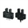
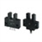
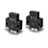

Building Automation
Industrial Automation
Power Automation & Safety


Bangladesh Distributor
Photomicro Sensors
These Optical Sensors provide a compact, low-cost method to detect workpieces. Many models are available, including Slot-type Sensors (through-beam) for non-modulated or modulated light, Reflective Sensors, and Sensors with separate emitters and receivers.
 Slot-type

Slot-type

The emitter and receiver are set in a U shape to enable easy handling.
Through-beam
Through-beam Sensors have separate emitters and receivers to enable setting them at the required distance.
Slot-type / Reflective
With Slot-type Sensors, the emitter and receiver are set in a U shape to enable easy handling. With Reflective Sensors, light is shown on the workpiece and reflected light is detected.
Limited-reflective
Convergent Reflective Sensors detect workpieces that are only a specific distance from the Sensor. They can be effectively used when there are background objects.
Diffuse-reflective

With Reflective Sensors, light is shown on the workpiece and reflected light is detected.
Retro-reflective
With Retro-reflective Sensors, a Reflector is set and the Sensor detects whether light is reflected back from the Reflector. They are effective for precise, stable detection.
For Special Applications
Sensors are also available for special applications.
Peripheral Devices
Accessories such as Connecting and Mounting Brackets are also available.
Related Contents
- Photomicro Sensors
© Copyright Kyoto Engineering & Automation Ltd. All Rights Reserved.